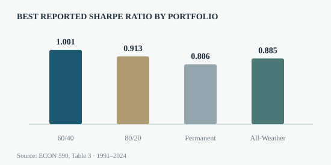

Portfolio Rebalancing & Asset Allocation
33+ years of market data. Four allocation strategies. One practical portfolio question.
Do investors improve risk-adjusted performance by rebalancing more frequently, or does the answer depend on the portfolio itself?
Compared 60/40, 80/20, Permanent and All-Weather portfolios across four rebalancing regimes using 1991–2024 monthly data and Fama–French factor regressions.

How the analysis was conducted
Constructed four multi-asset strategies using historical total-return proxies and tested buy-and-hold, annual, quarterly and monthly rebalancing. Evaluated annualized return, volatility and Sharpe ratios, followed by Fama–French three-factor regressions and alternative-asset robustness checks.
What the evidence suggests
- Quarterly rebalancing produced the highest reported Sharpe ratio for the 60/40 strategy (1.001).
- The 60/40 portfolio showed statistically significant positive monthly factor-model alpha across the reported rebalance schedules (0.07%–0.09%).
- In the baseline specification, the All-Weather portfolio posted its strongest Sharpe ratio (0.885) without scheduled rebalancing.
Based on Litao Tan, “Exploring the Impact of Rebalancing Frequency on Asset Allocation Strategies” (USC, 2025). Full academic paper available below. Third-party licensed datasets and employer materials are not redistributed.